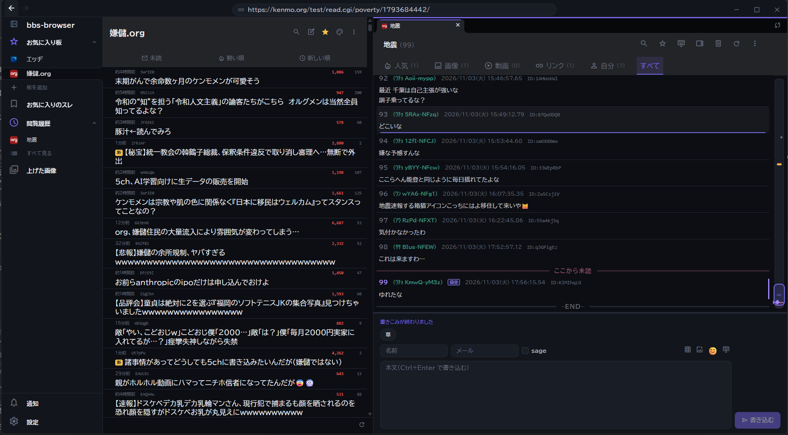
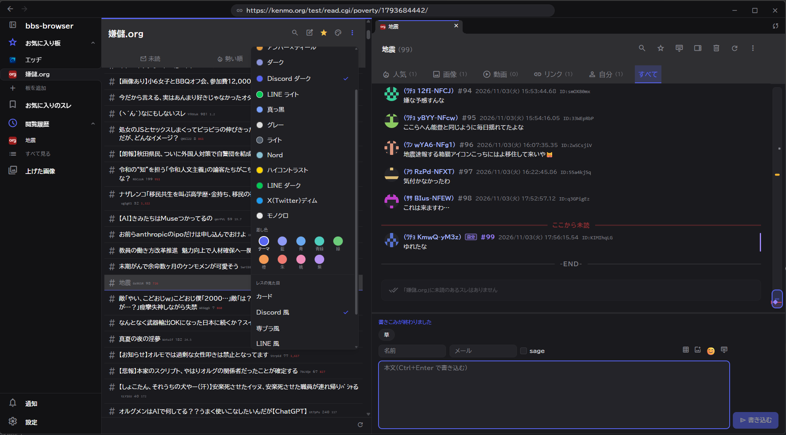
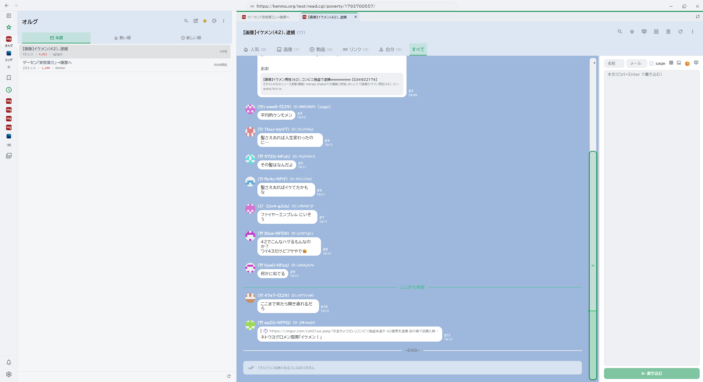
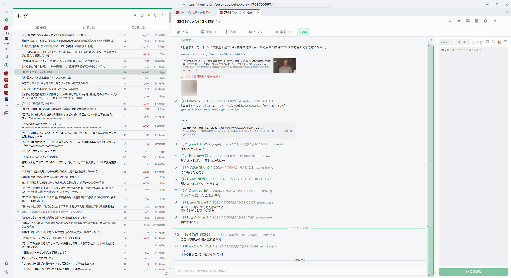
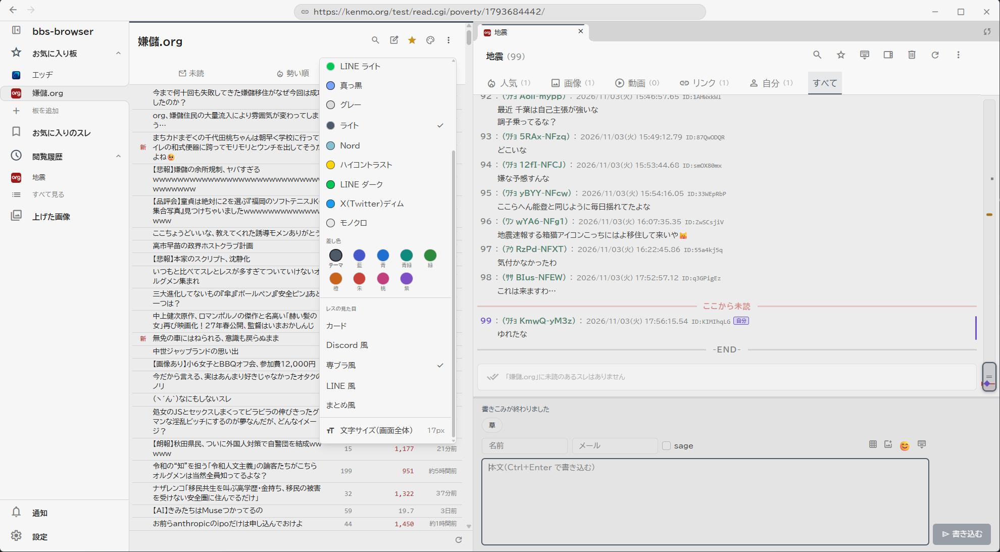

掲示板を読み書きする専用ブラウザ。
軽くて、設定は少なく、キーだけでも読める。
5ch・エッヂ・したらば・まちBBS・ふたば☆ちゃんねる・kenmo.org
専ブラに欲しいものはひと通り。足りないもの・直してほしいものは GitHub の Issues か、掲示板の運営板へ。
vim 風のキー(J/K で移動、? で一覧)と、Ctrl+K のコマンドパレット。板・スレ・操作を名前で探せます(PC 版)。
PC 版はタブで何本も開く。履歴は「見た順・未読・書き込んだ・お気に入り」の 1 つの画面に。自分の書き込みから元のレスへ飛べます。
ID・名前・本文・スレタイの NG に、同じ本文の連投を畳む自動 NG。条件を日本語で書く AI NG は端末の中だけで判定します。
ダーク・ライトを含む 13 の配色と自分の配色、差し色。レスはカード・Discord 風・LINE 風・専ブラ風・まとめ風。書体は同梱 16 書体と OS のフォント。
書き込み欄に貼るかドラッグするだけ。上げ先は imgur・catbox・imgbb など 6 つ。位置情報(EXIF)はいつも取り除きます。
自分へのレス・お気に入りのスレの新着・キーワードに合うスレが立ったことを溜めておき、押すとそのレスへ。
展開したフォルダがそのままインストール先。ログも設定もその中の data に入り、フォルダごと消せばまっさらに戻ります。
本物の Web 版の画面を、ブラウザの中でそのまま。板とレスは作り物で、読むだけ(書き込み・ログインはできません)。別のタブで開く ↗
左の一覧でスレを押す・J K で動く・? でキーの一覧・Ctrl+K でコマンドパレット・パレットのボタンで配色とレスの見た目・Ctrl+ホイールで文字の大きさ。
レスの見た目と配色は、見ながら変えられます。押すと大きく出ます。





起動から書き込みまで。
どちらも 最新のリリース から。Android 版は準備中です。困ったら 掲示板の運営板へどうぞ。
OBB_x.y.z_x64-setup.exe を落として実行%APPDATA%\io.github.contentsview08.obb\ に入ります。新しい版は起動時に自動で入りますOBB_x.y.z_x64_portable.zip を好きな所に展開OBB.exe を起動(Windows 10/11 の WebView2 を使います)data\ に入ります。フォルダごと消せばまっさらにOBB_x.y.z_amd64.AppImage に実行の権限を付けて起動sudo apt install ./OBB_x.y.z_amd64.deb